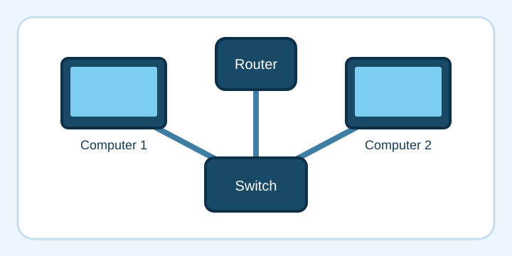

My Favorite Activity: Building Computer Networks
I like practicing network setup in Cisco Packet Tracer. I can connect computers, switches, and routers in a virtual workspace and see how information travels between them. My favorite part is troubleshooting: when two devices cannot communicate, I check the cables, IP addresses, gateways, and switch settings until I find the issue. It feels rewarding when a successful ping shows that the network works.

What I practice
- Plan a network and assign IP addresses to devices.
- Connect computers, switches, and routers.
- Configure settings such as gateways and VLANs.
- Test connectivity and troubleshoot problems.